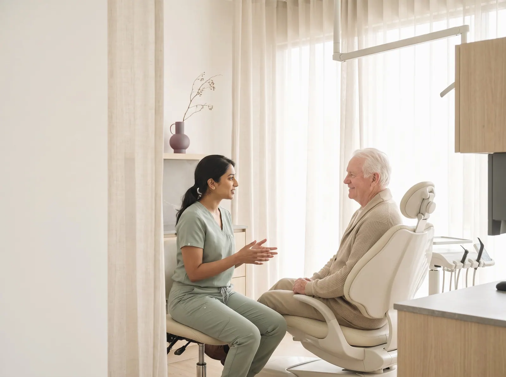
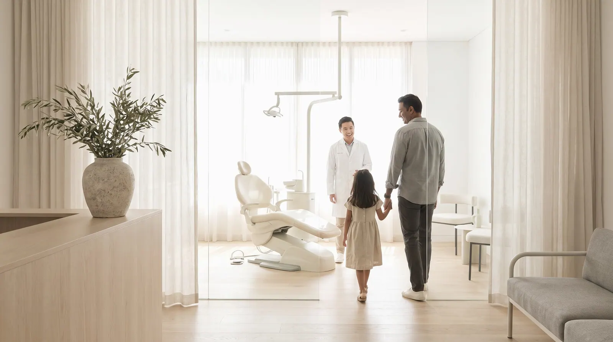
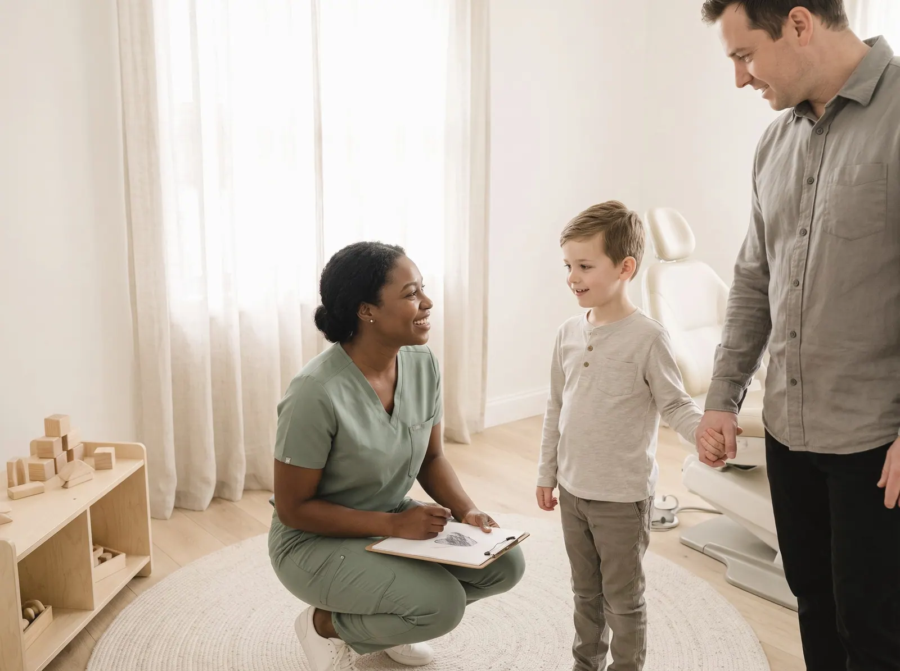

Most patients meet a practice on its website first
We read the websites of 135 independent dental practices in the US the way a new patient does: on a phone, often a little anxious, with the questions a patient asks before booking.
100 practices, four kinds of practice
Twelve checks, each citing a standard
2026-Q4

Part one
What patients find
on 135 practice websites
Patients ask eight questions. The median site answers four.
Across 135 dental practice websites, the median site answers four of the eight patient questions this edition tests. 28% name the insurance plans they take; 62% let a patient book online.1
The questions patients actually ask
We turned eight questions a new patient asks into eight checks. Each line shows how many practices answer the question on their site, without making the patient call to find out.
What a patient can find out
Share of all practice websites answering each question, %
Figure 1. Share of sites that answer each question on the home page or a page it links to, read from the served HTML. Sorted from least to most answered.
Four kinds of practice, side by side
General and family (37): median score 78, insurance plans named on 30%, online booking on 62%. Orthodontics (33): median score 77, insurance plans named on 27%, online booking on 55%. Pediatric (31): median score 77, insurance plans named on 32%, online booking on 65%. Cosmetic and implants (34): median score 74, insurance plans named on 24%, online booking on 68%.
Where each practice's website scores
Overall website score out of 100, one dot per practice; the coral rule is each group's median
Figure 2. Overall website score out of 100, one dot per practice. The coral rule marks each group's median.

Part two
Four practices,
up close
Four practices, up close
Four real sites from this edition, one strong, two in the middle and one weak. Each photograph shows the kind of moment its findings describe; the practice itself stays anonymous. The number is the overall website score; each circle is one check, filled when the site passes it.


The patients left out
A person using a screen reader, a keyboard, or an old phone on a weak signal is still a prospective patient. These checks measure whether the site lets them in.3
Table 1. Technical checks, share of the 135 sites that fail each one.
Method in brief
Read
The home page and up to eight pages it links to, read as a server delivers them: links, forms, text and markup. The patient questions are answered here, by fixed published rules (Appendix A4).
Measure
Google Lighthouse (PageSpeed Insights) in a phone and a desktop render, with Chrome UX Report field data where it exists: load time, contrast and image descriptions. Repeatable.
Review
An expert usability review of each home page against Nielsen's heuristics, used only in the usability part of the score. Every issue must name the heuristic, a severity and the element, or it is dropped.
Read the full methodology Sample, definitions, scoring, precision and limitations, in Appendix A.

For agencies and freelancers
What this means for agencies
what to fix first, and how to pitch it
For small agencies and freelancers who sell websites to independent dental practices. We scanned 135 of their websites: 1% score under 60 out of 100, and 86% leave at least three of the questions patients ask unanswered. Here is where the winnable work is, which problems to lead a pitch with, and how to show them without days of spec design.
Who is realistic to win
Cosmetic and implants are the most winnable: the lowest median score in this report (74 out of 100), and 3% of them score under 60. Their problems are visible, specific and fixable by a small team.
| Type | Sites | Median | Under 60 |
|---|---|---|---|
| General and family | 37 | 78 | 0% |
| Orthodontics | 33 | 77 | 0% |
| Pediatric | 31 | 77 | 3% |
| Cosmetic and implants | 34 | 74 | 3% |
Score out of 100. "Under 60" is the share of sites that miss most of what a patient looks for.
5 problems to lead a pitch with
- 91%Loads in under 2.5 s on a phone Build
Resize and compress the hero image, defer scripts, aim for under 2.5 s on a phone.
Your home page takes several seconds to appear on the phone of someone in pain.
- 84%Text contrast passes 4.5:1 Quick fix
Raise text contrast to at least 4.5:1 in the theme.
Parts of the site are hard to read, and it is a WCAG failure.
- 78%Are you taking new patients? Quick fix
Say plainly on the home page that the practice is welcoming new patients, with one line on what the first visit involves.
A new patient cannot tell from your site whether you would even see them.
- 77%What will it cost? Content
Publish prices for the common visits (exam, cleaning, X-rays) or a membership plan with its monthly cost.
Patients without insurance fear the bill most. Your site gives them no number at all.
- 72%Do you take my insurance? Quick fix
An insurance page that names every plan the practice is in network with, or says clearly that it is fee-for-service, linked from the home page.
"Do you take my insurance?" is the first question a new patient has, and your site makes them call to ask.
Share of sites with the problem. WCAG items are accessibility failures. Every check cites a standard in the method section.
How to show a prospect their problems, and a redesign
- 1Lead with their problem, not your services
Open with one question the site fails, for example loads in under 2.5 s on a phone (91% of sites in this report miss it), and show the exact page where the answer should be.
- 2Put a number on it
Compare their site with the sector: across 135 independent dental practices sites, the median scores 77 out of 100 and answers 4 of the 8 questions patients ask. A number travels further inside the client than an opinion.
- 3Show the fix without days of spec work
A rough redesign that answers those questions persuades better than a proposal, but it usually costs a designer a day or two per prospect. You can sketch it by hand, or use Clikiti: the scan is free and shows any site's problems in about a minute, and paid plans draft a redesign of the home page from the prospect's own brand, from about $2.33 per pitch.
Scan a prospect's site free No sign-up. You see what the prospect would see.
Show every practice what its patients see
Clikiti reads a practice's site the way a new patient does, states what it found, and generates the redesign you present before the first call.
See your market on ClikitiMethodology
How this study was designed, who was included, what was measured and how far the results can be relied on. It is written so that an agency can share it with a practice owner who wants to check the evidence behind a pitch.
A1. The research question
When someone looks for a dentist online, usually on a phone and often a little anxious, can they find out whether the practice will see them, whether it takes their insurance, what it will cost, how to book and who will treat them?
Population. Independent dental practices in the United States (owner-dentists with one to three locations) in four kinds of practice: the practices a small or mid-size web agency can realistically win as clients.
A2. Who was studied
The sample was built from local search listings, city by city, then screened so that every site in it is one an independent agency could realistically win.
| Source | What it contributes | Sites |
|---|---|---|
| Local search, general and family | General and family dental practices found in local search results, city by city | 37 |
| Local search, orthodontics | Orthodontic practices found in local search results, city by city | 33 |
| Local search, pediatric | Pediatric dental practices found in local search results, city by city | 31 |
| Local search, cosmetic and implants | Cosmetic and implant dentistry practices found in local search results, city by city | 34 |
Included
- An independent practice with its own website (not a directory, marketplace or chain location page)
- Based in the United States
- Home page responds and shows the practice it claims to be (each home page title was checked before scanning)
Excluded
- Dental service organisations and chains (for example Aspen Dental, Heartland Dental, Pacific Dental Services) and groups with four or more locations
- Direct-to-consumer aligner companies, implant franchises and dental tourism agencies
- Hospital, university and public-health clinics, and dental schools
- Directories and booking marketplaces
- Parked, placeholder, password-protected or unreachable sites, and duplicates
| From list to sample | Sites |
|---|---|
| Candidates listed | 140 |
| Removed at screening: the site refused automated visitors (1), parked or placeholder page (1) | −2 |
| Removed at editorial review | 0 |
| Cohort | 138 |
| Removed because the site's robots.txt asks crawlers not to visit | −2 |
| Removed because Google returned no phone speed test for the site | −1 |
| Studied in this edition | 135 |
| Region (US Census) | General and family | Orthodontics | Pediatric | Cosmetic and implants | All |
|---|---|---|---|---|---|
| Northeast | 9 | 8 | 7 | 8 | 32 |
| Midwest | 9 | 8 | 8 | 8 | 33 |
| South | 11 | 9 | 9 | 10 | 39 |
| West | 8 | 8 | 7 | 8 | 31 |
| All regions | 37 | 33 | 31 | 34 | 135 |
A3. How the sites were read
Pages. The home page, then for each of eight topics (new patients, insurance and payment, membership or pricing, the team, emergencies, comfort and sedation, booking, contact) the best-matching link on the home page.
Speed and accessibility. Google PageSpeed Insights (Lighthouse) on a mid-range phone profile and on desktop, plus Chrome UX Report data from real visitors over the previous 28 days where Google publishes it for the site.
Crawler conduct. One request at a time to each site, at least 400 ms apart, at most ten pages per site; robots.txt is read and obeyed for every page requested; a site that refuses is left out and never retried. The crawler identifies itself as Mozilla/5.0 (compatible; ClikitiResearch/1.0; +https://clikiti.com).
A4. What was measured
8 questions patients ask before they book, answered from what each site publishes, and 4 technical checks against published standards. A check passes only when the rule below is met; anything the crawler cannot confirm counts as not answered.
| Question | Counts as answered when | Standard |
|---|---|---|
| Are you taking new patients?Says whether it is taking new patients | The site says whether it is accepting new patients (a menu label alone does not count). | Clikiti patient question 1 of 8 |
| Do you take my insurance?Says which insurance it takes | The site names at least one insurance plan or network the practice takes, or says plainly that it takes no insurance. | Clikiti patient question 2 of 8 |
| What will it cost?Shows prices or a membership plan | A dollar amount is tied to a treatment, an exam or a membership plan (financing limits, discounts and savings claims do not count). | Clikiti patient question 3 of 8 |
| Can I book online?Appointments can be booked or requested online | A link or button books or requests an appointment online, or an online scheduler is built into the site (payment, forms and review links on the same services do not count). | Clikiti patient question 4 of 8 |
| Can I be seen today?Emergency or same-day care stated | The site offers emergency or same-day appointments (same-day crowns, a treatment, do not count). | Clikiti patient question 5 of 8 |
| Who will treat me?Dentists named, with their training | A dentist is named, with their degree, dental school, residency or board certification stated next to the name. | Clikiti patient question 6 of 8 |
| When are you open?Opening hours stated | Opening hours (days and times) are stated on the home, contact or new-patient page. | Clikiti patient question 7 of 8 |
| Will it be comfortable?Comfort or sedation options explained | Comfort or sedation options for nervous patients are explained. | Clikiti patient question 8 of 8 |
| Technical checks | ||
| Loads in under 2.5 s on a phoneLoads in under 2.5 s on a phone | Real visitors on phones see the main content within 2.5 seconds (Chrome UX Report, 75th percentile). Where Google publishes no visitor data, the phone lab test is used. | Core Web Vitals · LCP |
| Text contrast passes 4.5:1Text contrast passes 4.5:1 | No text on the home page fails the WCAG 1.4.3 minimum contrast of 4.5:1, in either the phone or desktop test. | WCAG 1.4.3 |
| Images have text descriptionsImages have text descriptions | Every meaningful image on the home page has a text description (WCAG 1.1.1). | WCAG 1.1.1 |
| Dentist or MedicalClinic structured dataDentist or MedicalClinic structured data | The site describes the practice to search engines with Dentist or MedicalClinic structured data. | Schema.org · Dentist |
A5. The website score
Each site's overall score (0 to 100) is Clikiti's website score, rubric 2.0.0. It measures the website, not the practice, and the patient questions above do not feed it. It is a weighted mean of five pillars:
| Pillar | Weight | Based on |
|---|---|---|
| Usability | 30% | Checks of the home page for broken links and images, and an expert review of the page as rendered on a phone and on a desktop screen, against Jakob Nielsen's ten usability heuristics. Each issue must name the heuristic, a severity on the Nielsen Norman Group scale and the exact element or wording; issues without all three are discarded, and two independent passes must agree. |
| Speed | 25% | Google Lighthouse on a mid-range phone (60%) and on desktop (20%), and real-visitor Core Web Vitals from the Chrome UX Report (20%) where available. |
| Accessibility | 25% | Google Lighthouse accessibility audits (70%) and Clikiti's own WCAG checks of the served page (30%). |
| Search | 10% | Google Lighthouse SEO audits (60%) and Clikiti's own search checks of the served page (40%). |
| Trust | 10% | Google Lighthouse best-practice audits (40%) and security header checks (60%). |
Within a pillar, each issue costs points by severity (critical, high, medium, low) and by how many times it occurs; issues based on judgement count at 70% of measured ones, and duplicates of the same root cause count once. On the four practice profiles, the number out of 100 is this overall score, and each circle is one check in its group: filled when the site passes it, hollow when it does not.
A6. Precision
With 135 sites, a share reported for the whole sample is precise to within ±8.4 percentage points at 95% confidence (worst case, a 50% share; 1.96 × √(0.25/n)). By type: general and family ±16.1 (n = 37); orthodontics ±17.1 (n = 33); pediatric ±17.6 (n = 31); cosmetic and implants ±16.8 (n = 34). Differences between types smaller than these margins should be read as similar. Percentages are rounded to whole numbers; medians are the middle value of the sites in a group.
A7. Quality control
- Every home page in the cohort was fetched and its title checked against the listed practice before scanning
- Detection rules were checked against the evidence they record for a sample of firms in every kind of practice, and revised before the final run
- Every published figure is recomputed from the data at build time, and a statement in the text that the data does not support stops the build
- Results are published only after automated checks for missing data, anonymity, accessibility of the report itself and the margin of error statement pass
A8. Limitations
- A point-in-time snapshot: sites change, and a site may have improved or declined since it was read.
- Only public pages were read: the home page and pages it links to. Patient portals, chat widgets and multi-step booking flows were not tested.
- Answers are read from the page as a server delivers it. Content that only appears after scripts run in the browser (some booking widgets and insurance lists, for example) is not seen, which the study counts as a gap a search engine or a slow phone would also meet.
- The study reports what a website shows. It is not medical or dental advice and does not assess the quality of any practice's care.
- Automated accessibility tests find only part of what WCAG covers; keyboard and screen-reader use need a manual audit.
- The sample is a structured list of real, independent practices, not a random draw. Margins of error are given as a guide to precision, not as a guarantee that the results hold for every practice in the country.
A9. Data, licence and corrections
The aggregate results are published as CSV and JSON beside this report under the Creative Commons Attribution 4.0 licence: you may reuse, adapt and share them, including in client proposals, with a credit to Clikiti and a link. No per-site results are published. Corrections and removal requests are reviewed and answered personally; see the end of this report.
Practices in this study
The 135 websites in this edition, by type. This list says who was scanned and nothing more: results in this report are shown only in aggregate or anonymously.
General and family (37)
- 3G Family DentistrySalt Lake City, UT
- ALFA DentistryMt. Lebanon, PA
- All Smiles Family DentalKnoxville, TN
- Atlas Family DentistryColumbus, OH
- ATX Family DentalAustin, TX
- Austin Family DentistAustin, TX
- Barras Family DentistryLafayette, LA
- Baystate Family DentalWorcester, MA
- Bend Family DentistryBend, OR
- Cottonwood DentalSalt Lake City, UT
- Coulter Family DentistryMishawaka, IN
- Deitz Family DentalAlbany, NY
- Dupont Family DentistryFort Wayne, IN
- Fletcher Family DentistryFletcher, NC
- Georgetowne Family DentistryOmaha, NE
- Hebert Family DentistryLafayette, LA
- Highland Family DentalRedmond, OR
- KB Family DentistryGrand Rapids, MI
- Knoxville Family DentalKnoxville, TN
- Law Family & Cosmetic DentistryKnoxville, TN
- Mansfield Family DentalMansfield, OH
- Maple Glen Family DentistryEast Amherst, NY
- Medley Smiles Family DentistryIndependence, MO
- New Haven Family DentalNew Haven, MI
- Paolucci Family DentistsProvidence, RI
- Pleasantburg Family DentistryGreenville, SC
- Queen City Family DentistryAmherst, NY
- Ricci Family DentistryProvidence, RI
- Signature Smiles Family DentistryGreenville, SC
- Slootmaker Family DentalFort Collins, CO
- Strathmoor Family DentistryLouisville, KY
- Stratman Family DentistryTucson, AZ
- Vachon DentalManchester, NH
- Waveland Family DentalDes Moines, IA
- Westport Family DentalWestport, CT
- WestSide Dental StudioReno, NV
- Williams Family DentistryPocatello, ID
Orthodontics (33)
- Adult & Pediatric OrthodonticsPortland, ME
- Advanced Orthodontics of WisconsinMadison, WI
- aligned. OrthodonticsDenver, CO
- Anchor OrthodonticsProvidence, RI
- Bates OrthodonticsRichmond, VA
- Braces OmahaOmaha, NE
- Crown Point OrthodonticsCharlotte, NC
- GO Orthodontics TampaTampa, FL
- Goldsberry OrthodonticsSalt Lake City, UT
- Grand Rapids Family OrthodonticsGrand Rapids, MI
- Greater Buffalo OrthodonticsBuffalo, NY
- Harnick OrthodonticsAlbuquerque, NM
- Holt OrthodonticsSacramento, CA
- Johnson OrthodonticsColumbus, OH
- Kanning OrthodonticsKansas City, MO
- Lathrop Family OrthodonticsPortland, OR
- Limestone Hills OrthodonticsAustin, TX
- Lozman OrthodonticsLatham, NY
- Moore OrthodonticsBirmingham, AL
- Music City OrthodonticsNashville, TN
- Philadelphia OrthodontistsPhiladelphia, PA
- Polaris Orthodontic CenterColumbus, OH
- Premier OrthodonticsIndianapolis, IN
- Quimby & Collins OrthodonticsCharlotte, NC
- Raleigh Family OrthodonticsRaleigh, NC
- Reuter OrthodonticsLouisville, KY
- Sherman OrthodonticsPittsburgh, PA
- Slattery OrthodonticsBoise, ID
- Smile Straight OrthodonticsTucson, AZ
- Tina Reed OrthodonticsPittsburgh, PA
- West Hartford OrthodonticsWest Hartford, CT
- Wire OrthodonticsSpokane, WA
- Wurm OrthodonticsWhitefish Bay, WI
Pediatric (31)
- Ballantyne Pediatric DentistryCharlotte, NC
- Bitty Bites Pediatric DentistryRichmond, VA
- Brookdale Pediatric DentistryCharlotte, NC
- Bubbles DentalSacramento, CA
- Caldwell Pediatric DentistryNashville, TN
- Central Texas Pediatric DentistryAustin, TX
- Children's Dental SpecialtiesWorcester, MA
- Cipes Pediatric DentistryWest Hartford, CT
- Dentistry for ChildrenSavannah, GA
- Dr. Alexis Phillips Kids DentistBoise, ID
- East Bench Pediatric DentistrySalt Lake City, UT
- Golden Valley Kids Pediatric Dentistry and OrthodonticsGolden Valley, MN
- Green Hills Pediatric DentistryNashville, TN
- Hines Little SmilesColumbus, OH
- Kids Smiles Pediatric DentistrySt. Louis, MO
- Madison Pediatric Dental & OrthodonticsMadison, WI
- Montgomery Pediatric DentistryPrinceton, NJ
- Northwest Children's DentistryTucson, AZ
- Pediatric Dentistry of MichiganGrand Rapids, MI
- Pinky Promise Pediatric DentistryNaperville, IL
- Providence Pediatric DentistryProvidence, RI
- Roc Kids SmileRochester, NY
- Rochester Pediatric DentistryPittsford, NY
- RVA Pediatric DentistryRichmond, VA
- South Hill Pediatric DentistrySpokane, WA
- South Tampa Pediatric DentistryTampa, FL
- Steele Pediatric DentistryIndianapolis, IN
- The Kidds PlaceSpokane, WA
- Walker Pediatric DentistrySalt Lake City, UT
- Westside Pediatric DentistryCincinnati, OH
- Winning Smiles Pediatric Dental CarePittsburgh, PA
Cosmetic and implants (34)
- 12 South Dental StudioNashville, TN
- 38th Street DentalAustin, TX
- Alpers Family and Cosmetic DentistryScottsdale, AZ
- Art of Modern DentistryChicago, IL
- Atlanta SmilesAtlanta, GA
- Bakeman & KuckhoffGrand Rapids, MI
- Boise ProsthodonticsMeridian, ID
- Boise Smile DesignBoise, ID
- Brito Family DentalBoston, MA
- Center Plaza DentalBoston, MA
- Chicago Beautiful SmilesGlenview, IL
- Cosmetic and Implant Dentistry of ConnecticutHamden, CT
- Cosmetic Dentistry of AtlantaAtlanta, GA
- Deldar & Kay DentalNoblesville, IN
- Denver Dream DentistryDenver, CO
- Dr. Rick DentistryScottsdale, AZ
- East Burn Dentistry & ImplantsPortland, OR
- Elite Veneers MiamiCoral Gables, FL
- Fusion Dental CareRaleigh, NC
- General & Cosmetic Dentistry of TampaTampa, FL
- Gentry DentistrySan Francisco, CA
- Hampton Dental AssociatesMilwaukee, WI
- Icon DentalSan Francisco, CA
- Indiana Implants & DentistrySchererville, IN
- Leonard Hess, DDSMonroe, NC
- Mt. Lookout DentistryCincinnati, OH
- Nickel City DentistryBuffalo, NY
- Pearce Dental GroupCincinnati, OH
- Pittsburgh Dental SpaPittsburgh, PA
- Prosthodontics of PrincetonPrinceton, NJ
- Razavi DentalPhiladelphia, PA
- Smile Design ManhattanNew York, NY
- Texas Center for Cosmetic DentistryHouston, TX
- Westlake Hills Dental ArtsWest Lake Hills, TX
About this study
This report is based on automated scans of publicly available home pages, and pages they link to, run on 2026-10-13. Its findings are a point-in-time technical snapshot of each website. They are not a judgement of any practice's dentistry, care or clinical quality, and automated checks may contain errors. This report is not medical or dental advice, and it is not a judgement of any practice’s clinical care. Clikiti is not affiliated with, and does not endorse, any practice listed here; trademarks belong to their owners. The report is provided “as is” under CC BY 4.0, without warranty of any kind. Every person in this report's photographs is AI-generated; none is a real person. The one practice screenshot is the featured practice's own home page, shown unaltered.
Remove my practice from this study
We review every request and reply when it's done; removed practices are excluded from future editions.